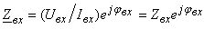

| A D - B C = 1, | (2.131) |
поэтому для определения четырех коэффициентов (A, B, C и D)
достаточно провести три опыта, например, два опыта ХХ (при прямом
и обратном включении ЧП) и один опыт КЗ (обычно при прямом включении).
Методика расчёта A-коэффициентов заключается в следующем. По результатам измерений Uвх, Iвх и φвх (см. рис. 2.90) определяют входные комплексные сопротивления для каждого из трех опытов:
Методика расчёта A-коэффициентов заключается в следующем. По результатам измерений Uвх, Iвх и φвх (см. рис. 2.90) определяют входные комплексные сопротивления для каждого из трех опытов:
| , | (2.132) |
где Zвх = Uвх / Iвх -
модуль входного сопротивления, определяемый по показаниям вольтметра
и амперметра; ± φвх = Yu - Yi -
сдвиг фаз между входными напряжением и током, определяемый по показанию
фазометра или косвенно при помощи осциллографа или ваттметра (φ = arccos(P/UI)).
Итак, из опытов ХХ при прямом (I2 = 0,
рис. 2.90а) и обратном (I1 = -I1x = 0,
рис. 2.90б) включениях имеем